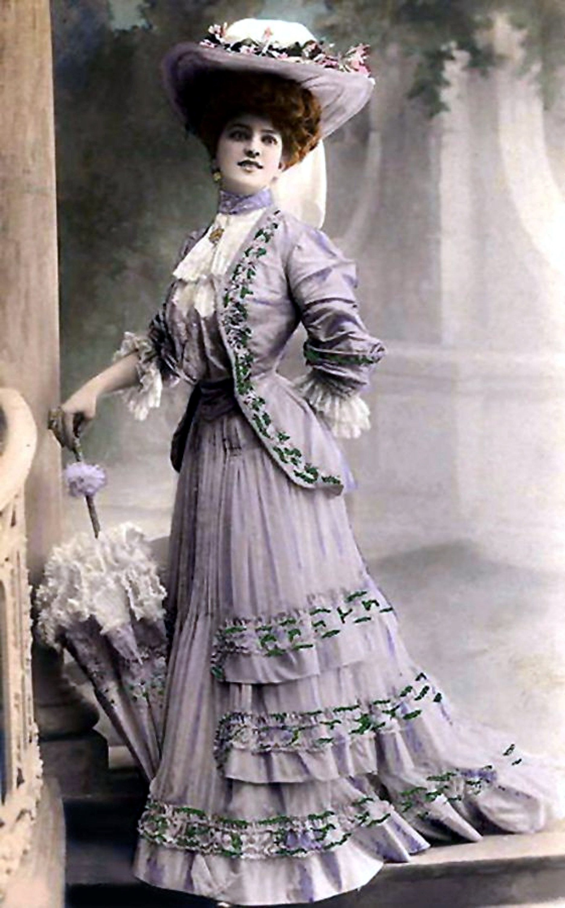
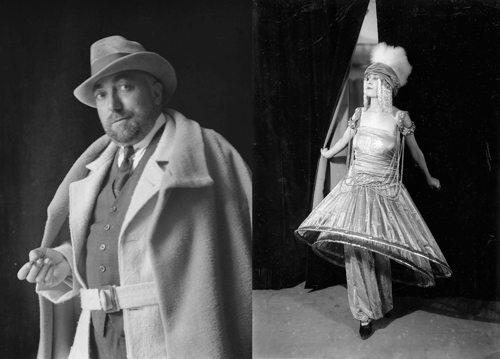
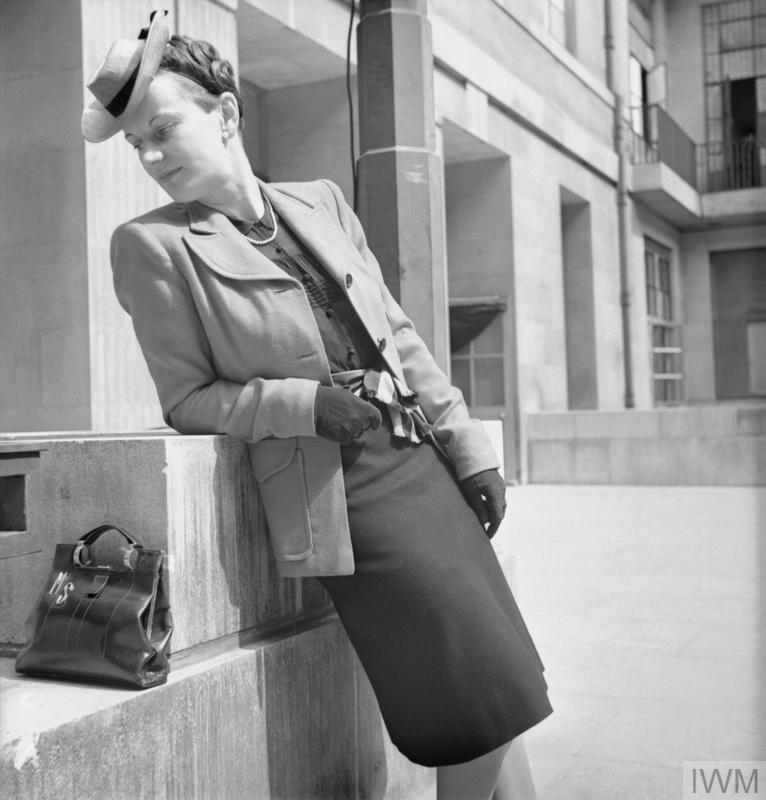
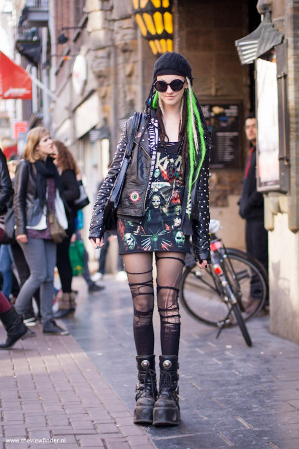

Edwardian Era Elegance
Characterized by elaborate gowns, lace embellishments, and refined hats — a true display of sophistication.

Poiret and the Birth of Modernism
Paul Poiret revolutionized fashion by freeing women from corsets and introducing flowing, artistic garments.

The Flapper Revolution
1920s flappers embraced short skirts, bobbed hair, and jazz-inspired fashion, symbolizing independence.

Hollywood Glamour
Golden Age Hollywood brought luxurious gowns, satin fabrics, and an aura of star-studded sophistication.

Utility and Wartime Fashion
1940s wartime fashion emphasized practicality with tailored suits, knee-length skirts, and minimal fabric use.

Rise of Punk and Street Fashion
From rebellious leather jackets to streetwear culture, punk and urban styles shaped modern fashion attitudes.